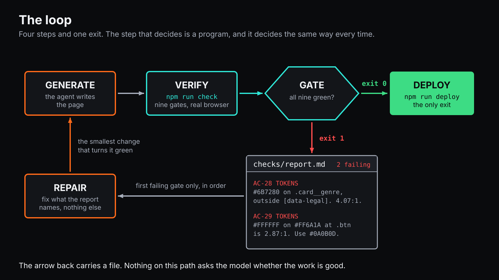

Before you come
Ninety minutes, thirty people, one loop. A coding agent is handed a design, writes a website, and is then told by a program — not by itself — everything that is wrong with it. Then it fixes those things and is told again.
This page is the preparation. It takes about fifteen minutes and goes much better at home than on conference wifi.
Fifteen minutes, four free accounts, one install. Do it at home — the room has thirty people and one wifi network, and sign-up forms are a miserable way to spend the first twenty minutes of a workshop.
You do not need to know how to code. This session is built for designers and product people. You will type a handful of commands and say a lot of things in English.
What we are going to build

An agent writes a page. A program — not the agent — checks it against the design, the contrast rules and the copy, and writes down what is wrong. The agent reads that and fixes it. Round and round until the program says nothing is wrong, and then it goes live.
The interesting box is the one that refuses. Everything below is what you need installed so you can build one of those on Wednesday.
What you need
01
GitHub
Free. You need it to sign in to Netlify in one click, and for the browser option if you cannot install anything.
2 min · confirm the email
02
One coding agent
Claude Pro or ChatGPT Plus — one, not both. They are equals here: every prompt in this workshop was written and run against both.
the only thing on this page that costs money · about €20
03
Netlify
Free, and this is where your site ends up. Choose Sign up with GitHub and there is nothing else to fill in.
2 min · no card
04
Figma
Free is enough. The connection between Figma and an agent needs a paid seat, so the design also ships as files — nothing is blocked either way.
free tier is fine
Install one thing
You need Node on your machine, and then one of the two agent command-line tools — whichever matches the subscription you already have.
macOS
brew install nodeNo Homebrew? Download the LTS installer from nodejs.org.
Then one of:
npm install -g @anthropic-ai/claude-code
npm install -g @openai/codexWindows
winget install OpenJS.NodeJS.LTSOr the installer from nodejs.org. Use PowerShell, not the old Command Prompt.
Then one of:
npm install -g @anthropic-ai/claude-code
npm install -g @openai/codexLinux
sudo apt install -y nodejs npmNode 20.11 or newer. If your distribution ships something older, use nvm.
Then one of:
npm install -g @anthropic-ai/claude-code
npm install -g @openai/codexAm I ready?
Open a terminal and run these. Each one should print a version number.
node -vv20.11.0 or highernpm -vany versionclaude --versionif you chose Claudecodex --versionif you chose ChatGPTIf any of them says command not found, that thing is not installed. Go back a step, or bring it to the room fifteen minutes early and someone will sort it out.
If installing is not an option
Some work laptops will not let you install anything, and that is fine.
Open the workshop repository on GitHub, click the green Code button, choose Codespaces, and create one. You get a full machine in your browser with Node and both agents already on it. Make an empty folder inside it and start there — the workshop itself never touches the repository's contents.
GitHub's free tier includes 120 core-hours a month. This session uses about two.
Questions people ask
I have never used a terminal.
Good — a third of the room has not either. There is a page of it in the workshop tab, and the first thing your agent is asked to do is explain each command as it goes.
Do I need to know how to code?
No. You will read code and say what is wrong with the result in plain English. That is the job the session is about.
I do not want to pay for an AI subscription.
The free tiers of both products do not include the command-line tool, so a free account will not run the loop. The cheapest tier of either is enough, and you can cancel afterwards.
My Figma is free.
Then the Figma-to-agent connection will refuse, and nothing else changes. The design also ships as three PNGs, a file of every colour and size, and a file of every word. That route is what the checks compare against.
My work laptop will not let me install things.
Use the browser option. You get a full machine with everything on it and you install nothing.
Will this work on Windows?
Yes. Use PowerShell rather than the old Command Prompt. Everything in the session is the same.
What if I fall behind?
You cannot, in a way that matters. Every prompt stands alone — if one is going badly, tell your agent to stop and paste the next. A half-built page with a working checker teaches more than a finished page with none.
What do I take home?
A live URL, the page of prompts, and the design pack. All of it stays online after the conference.
On the day
Bring: your laptop, your charger, and headphones if you like working with them.
Arrive: a few minutes early if anything above did not work.
You will leave with: a live URL, a page of prompts you can reuse on Monday, and a fairly specific opinion about when to trust a language model.